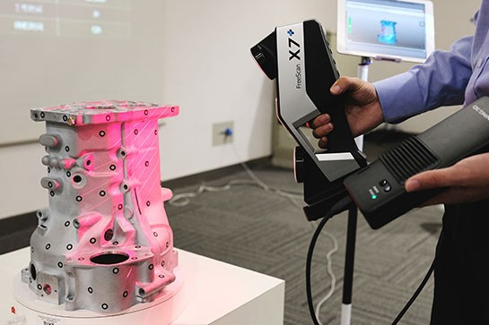

CAD
Formato: STEP (.step/.stp).
Digitalizamos tu pieza física y la convertimos en un modelo CAD listo para fabricar o imprimir. Ideal para automoción, maquinaria y prototipos.

Convertimos piezas reales en modelos 3D precisos. Partimos de la pieza física y, mediante escaneo 3D y medición, reconstruimos su geometría en CAD paramétrico para poder modificarla, optimizarla o fabricarla de nuevo.
Trabajamos para automoción (soportes, carcasas, adaptadores), maquinaria industrial (protectores, útiles, recambios descatalogados) y prototipos.
Fotos/medidas, uso de la pieza y requisitos.
Luz estructurada, fotogrametría o medición manual.
Modelo paramétrico editable.
Ajustes y versiones contigo.
Archivo CAD + malla si la necesitas.
Impresión 3D o fabricación.
Formato: STEP (.step/.stp).
STL u OBJ (si se requiere para impresión o visualización).
PDF con cotas principales, si lo pides.
Seleccionamos la metodología según la pieza: escáner de luz estructurada, fotogrametría con calibración y medición manual con calibres/profundímetros para cotas clave. Combinamos nubes de puntos y reconstrucción paramétrica para obtener un modelo fiable y editable.
desde 60–120 €
Pieza simple, 1–2 cotas clave.
desde 180–350 €
Geometría mixta, encajes.
desde 450–900 €
Carcasa compleja/forma orgánica.
Incluye escaneo/medición y entrega CAD STEP + malla si la necesitas. La impresión 3D es opcional (presupuesto aparte).
Envíanos fotos y medidas o cuéntanos el uso; te damos presupuesto rápido.